Xiumi 极简深色
黑白编辑式界面。对比图使用同一路由、同一篇长文稿与同一视口；应用外壳变化，作品保持白底与原排版。
桌面 · 1440 × 900
改造前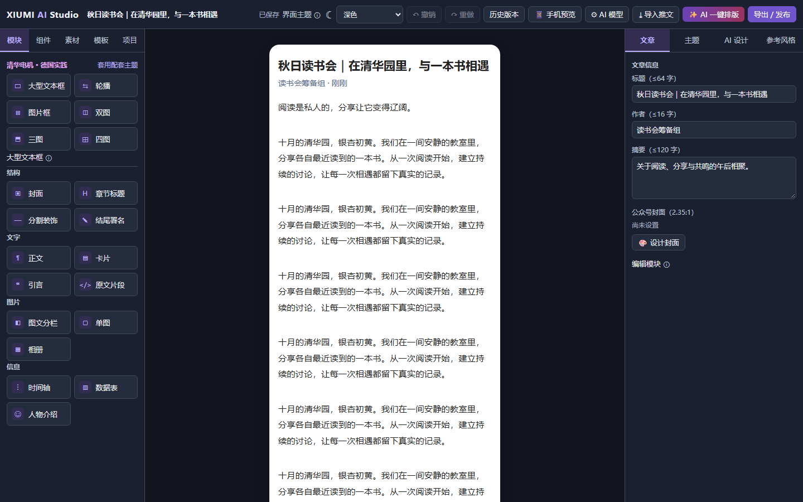
改造后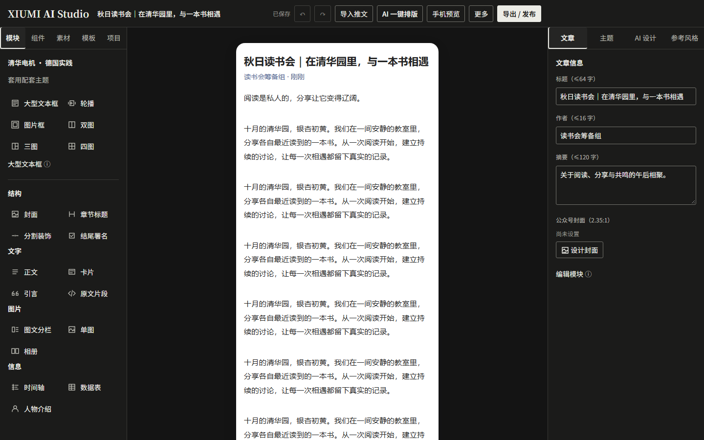
平板 · 1024 × 768
改造前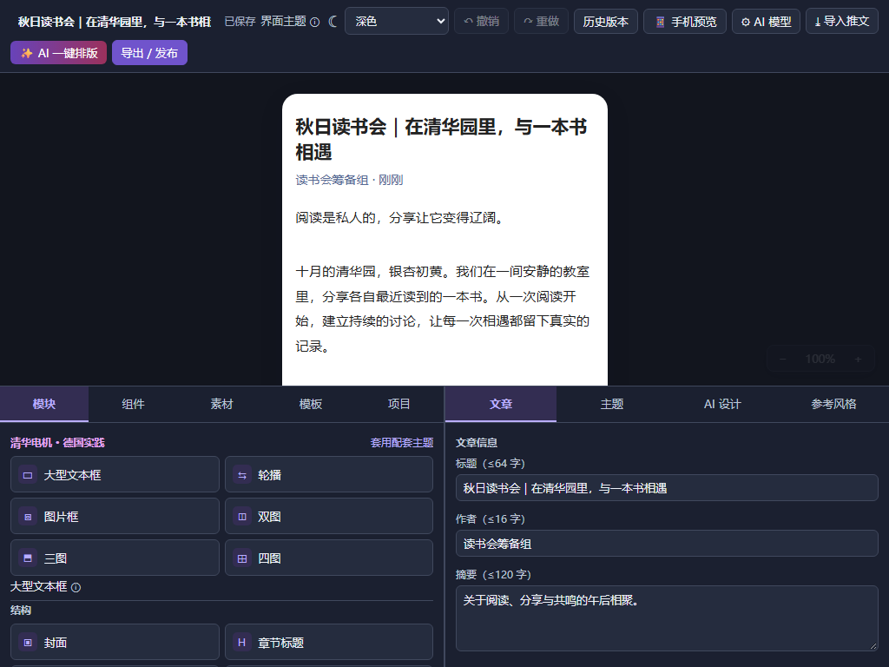
改造后：资源／画布／属性切换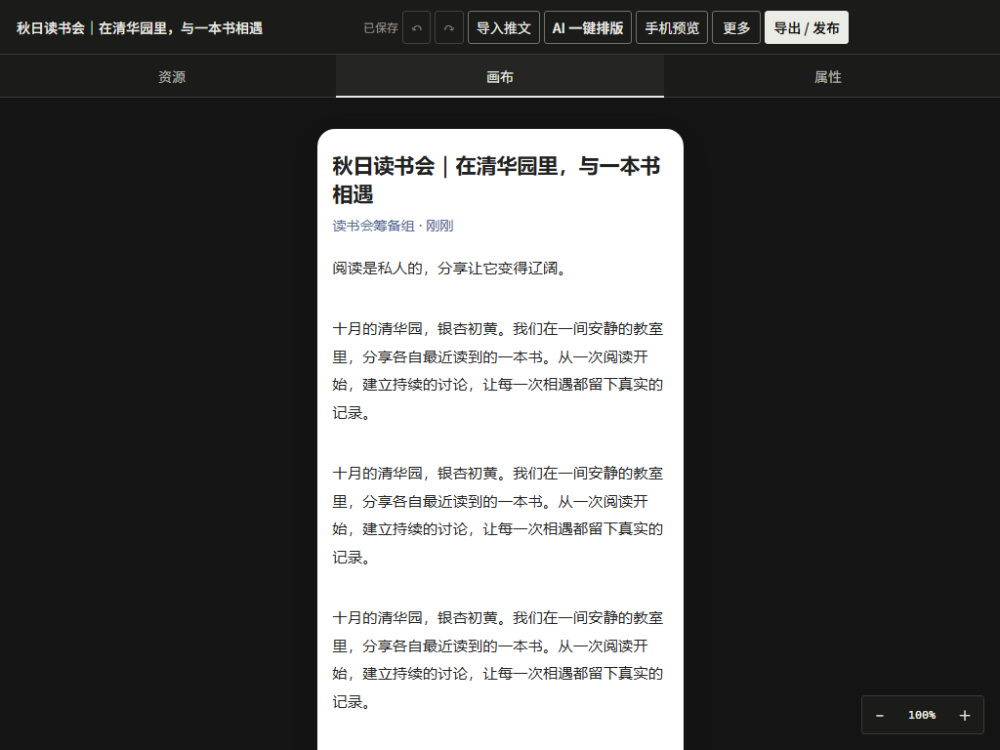
手机 · 390 × 844
改造前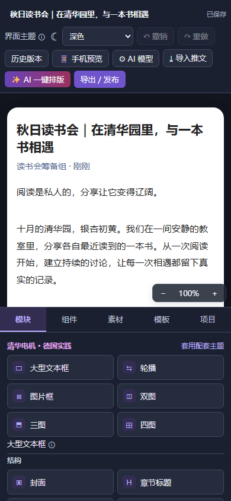
改造后：紧凑工具栏与主工作区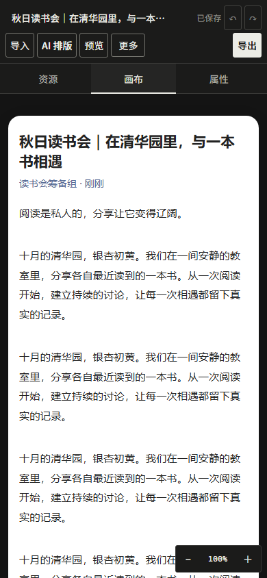
模型设置弹窗
改造前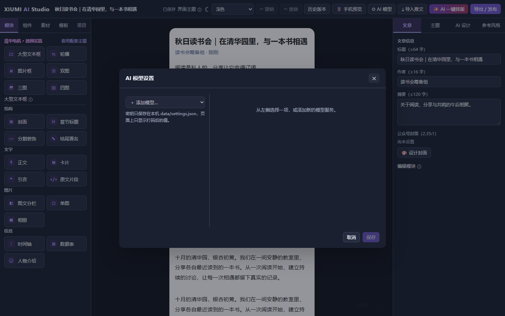
改造后：本地宋体标题、统一表单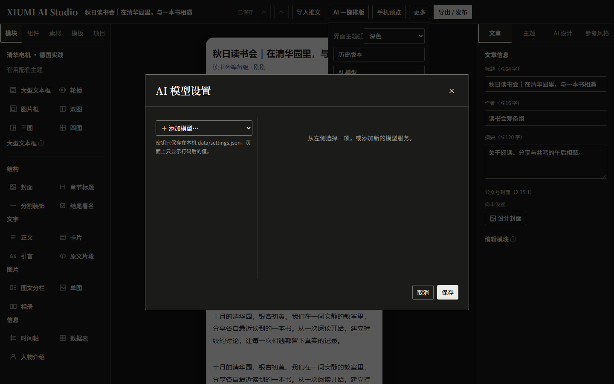
保存失败反馈
通过测试注入 HTTP 503，复现保存失败；不是伪造成功。
改造前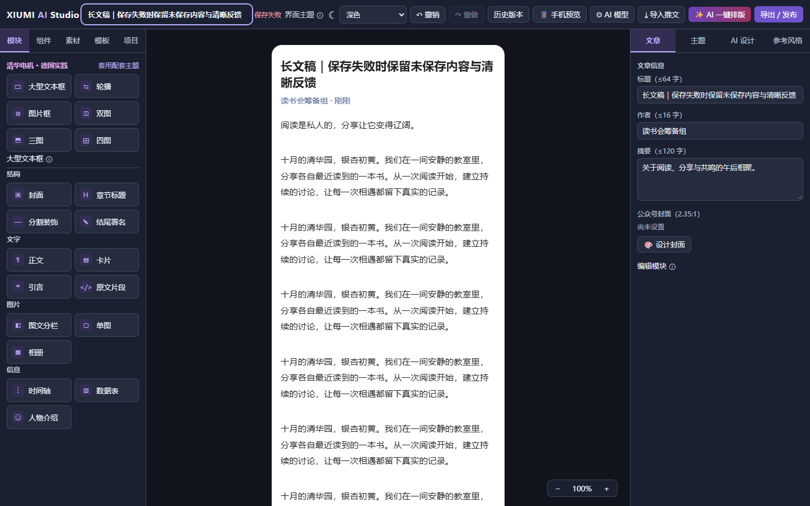
改造后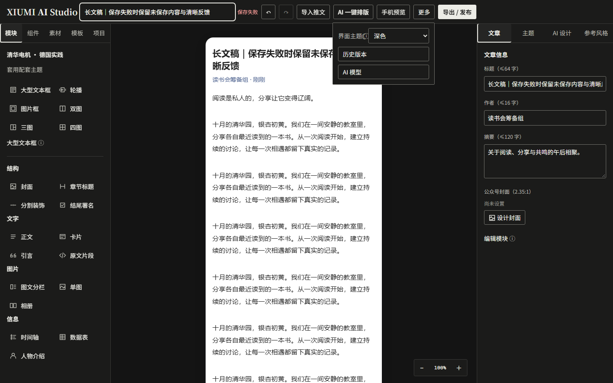
真实模型列表失败
实际后端向未运行的本地地址请求模型列表，返回 502。错误保留，按钮恢复，仍可手动填写模型。未发送真实密钥或付费请求。
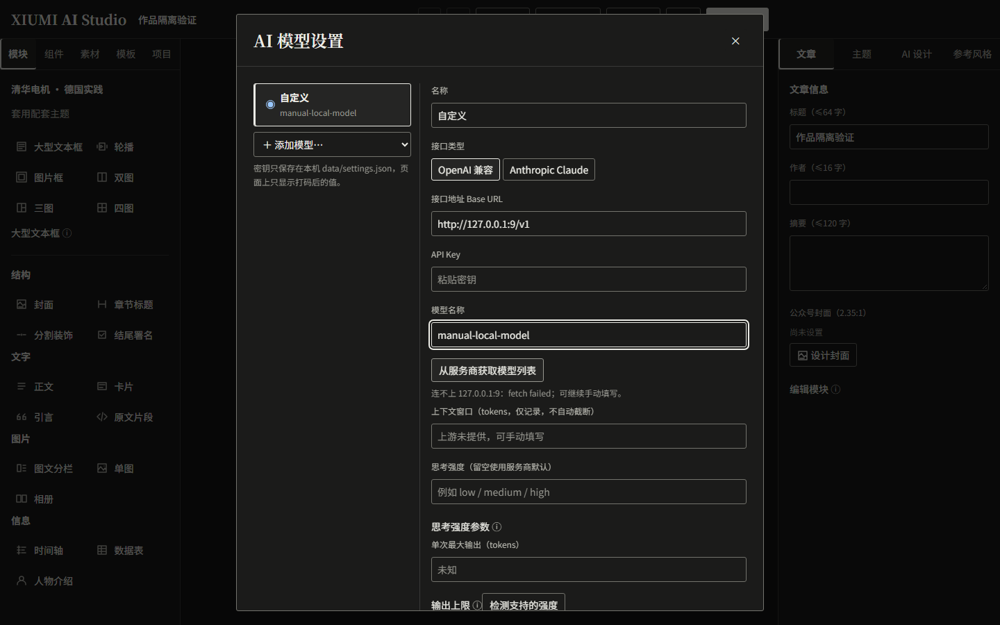
字体实测：Chromium 实际字形证据。截图与本地自动化不代表真实微信公众号发布、硬件手机或其他浏览器已验收。